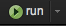
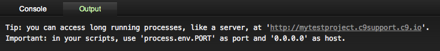
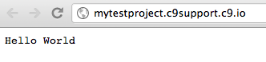

Writing and Running a Node.js Program
Cloud9 IDE was built on top of the Node.js platform, and as such, you have full access to the node runtime. Currently, we support running both version v0.6.x and v0.8.x.
In this section, we'll walk you through the creation of a simple Hello World program. To get started, you'll first need to create a (GitHub or Mercurial) project. If you need a refresher on how to do this, please refer to Creating a New Workspace.
A Simple Node.js HTTP Server
Once you're in Cloud9, create a new file called server.js. Type the following code in the file:
var http = require('http');
http.createServer(function (req, res) {
res.writeHead(200, {'Content-Type': 'text/plain'});
res.end('Hello World\n');
}).listen(process.env.PORT, process.env.IP);This is a Node.js HTTP server. It returns a simple "Hello World" page every time you access the page. In short, you are creating an HTTP server with a callback function that is called for each request.
In the callback function, you create a response with a status code of 200 (indicating that the request was fulfilled successfully) and the message "Hello World". Finally, you specify which port and IP address the server runs on. When Cloud9 IDE runs servers, you set and retrieve the IP address and port number with the process.env.IP and process.env.PORT variables.
When you hit the  button in the menu bar, the console will print out the following message:

To see your application in action, click on the link created for your project. You should see your "Hello World" application open up in a new browser tab:
.
NVM Support
We have rudimentary support for nvm, that allows you only to switch between Node.js versions 0.6.21 and 0.8.x.
To use nvm, open the terminal and type:
# to switch to version 0.6.21
nvm use v0.67
# to switch to the latest 0.8.x
nvm use v0.8